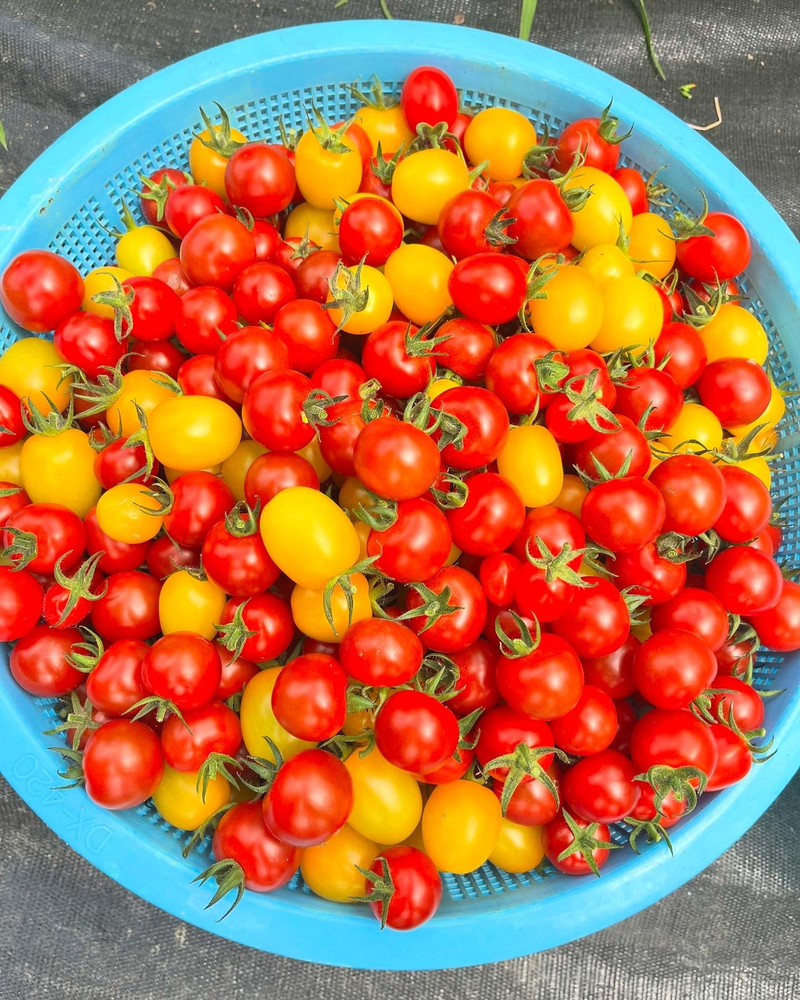
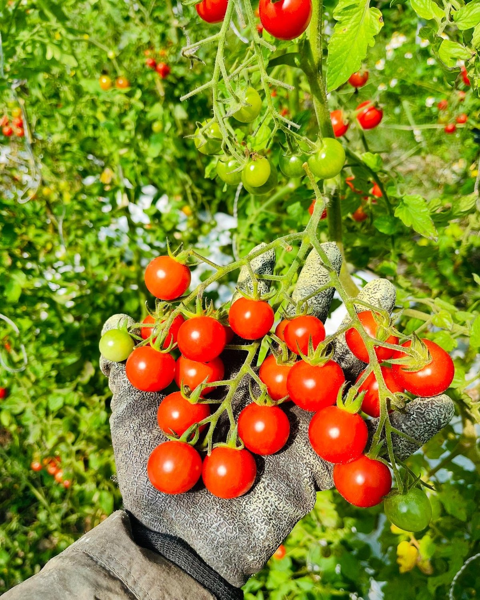
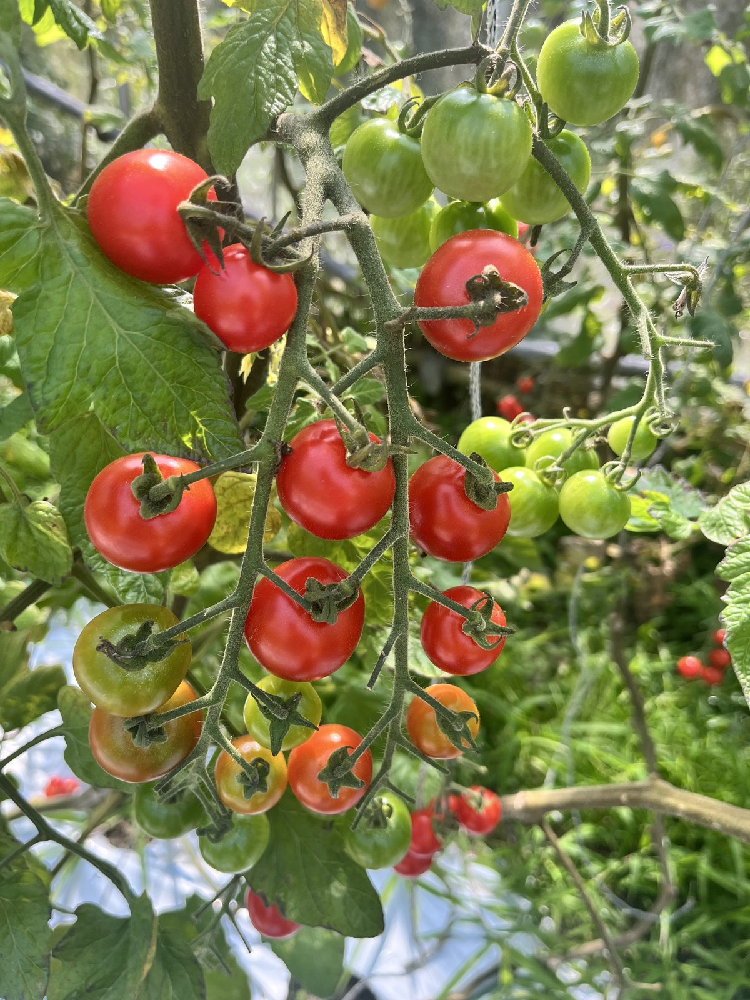
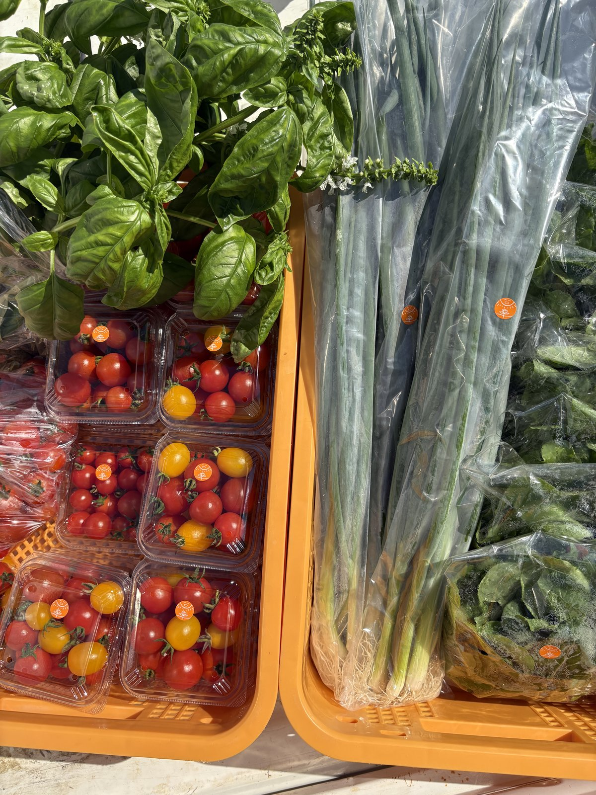
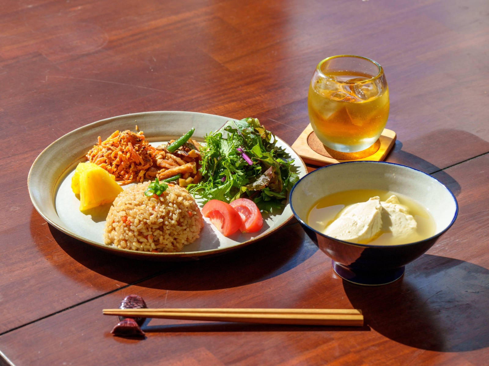

ゆいファーム
浜比嘉ゆいファーム
Hamahiga Yui Farm島の太陽と土に育てられた、小さな畑の恵み。
浜比嘉ゆいファームは、2025年にこの島で新規就農した、家族で営む小さな農園です。娘を愛する気持ちを、野菜に対する気持ちに重ねて名前に込めました。
ゆいファームについて
About Yui Farm
食に魅せられて 料理の道から畑の道へ
ー 消費する生活から生産する人へ ー
沖縄への移住と共に目覚めた料理の道。飲食の営みを続ける中でコロナ禍を経験し、飲食を提供することの意味を改めて考え、野菜を自ら生産したいという思いになりました。
転身を決めてから2年間のオーガニック農家での修行を経て、2025年7月に念願の農家になることができました。

無農薬・無化学肥料 大切にしていること
ー 食べることは生きること ー
新鮮な野菜を口にすると、心とからだが喜んでいることがよくわかります。また外で食事をする時に、その料理に心がこもっているのを感じ取ることがあります。それは、その食材やお客様のことを考え、愛情を持って接しているのかが伝わるからではないかと思うのです。
料理を提供してきたものとして、口にして美味しいはもちろんのこと、安心・安全であることにも気をつけてきました。収穫をするまでは、天候との睨めっこ。子育てと同じで、野菜育てはいつも大変ですが、楽しむことを忘れずに、ゆいファームを育てていきたいと思います。
育てている野菜たち
Our Vegetables
島の気候に寄り添った野菜づくり
ー 農薬・化学肥料は一切使いません ー
ハウスと畑では、ミニトマト、ルッコラ、丸オクラ、スイートバジル、キャッサバ芋など、沖縄の気候に寄り添った野菜たちを育てています。栽培期間中、農薬・化学肥料は一切使わず、有機JAS基準での栽培に取り組んでいます。
虫や病気とも、薬に頼らず手間と工夫で向き合う。効率だけを求めない、島の時間に合った農業です。
収穫した野菜は、うるマルシェや地域の飲食店などへお届けしています。宿にお泊まりのお客様には、朝食の島野菜としてお楽しみいただけることも。畑からテーブルまで、一番近い距離でお届けする味をぜひ体験してください。
最新の収穫・出荷情報は 浜比嘉ゆいファームのInstagram（@hamahiga_yuifarm）にてお届けしています。フォローよろしくお願いいたします。
宿での朝食提供
Breakfast
ゆし豆腐と島野菜の朝定食
お一人様 2,000円（3日前までの要予約）
ゆいファームや地元で採れた新鮮なお野菜を使用した、カラダにやさしい朝ごはんを、ご宿泊のお客様にご提供しています。
ご予約・お問い合わせ
ご予約・空き状況の確認はAirbnbにて承っております。ご不明な点は、メール（islandresort76@gmail.com）までお気軽にお問い合わせください。
宿の空き状況・ご予約（Airbnb）お問い合わせ：islandresort76@gmail.com